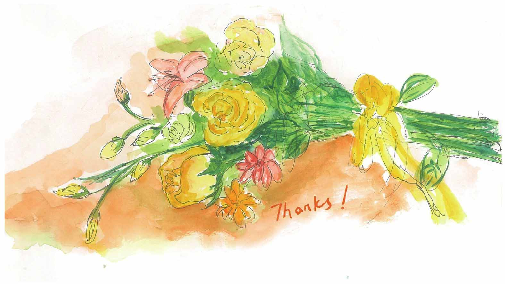

我要真诚地感谢很多朋友、老师、同学，他们给我提出了很多有益的建议，给了我莫大的鼓励。
首先，我要感谢我的两位好朋友：邢光林老师和骆婷老师，邢光林老师先后两次对书稿进行了仔细的批阅，第一次批改完他说的一句“这是黎明前的黑暗”，让我印象十分深刻。记得他第二次批改完我去取稿子的那天，他又请大家吃了顿饭。饭桌上，他手一挥：“比上次强多了！”话虽如此，他再次用火眼金睛帮我挑出诸多错误。感谢骆婷老师，从她那里，我总能得到诸多启发，我们每一次的交流都是我改稿的动力来源。
感谢李泳老师，大概是2014年的一天，编辑转发给我一封邮件，在这封邮件中，李泳老师对当时完成的第一章进行了非常详细的批阅，满目飘红的批注意见让我至今记忆犹新，李泳老师的意见和建议非常专业、中肯，虽然所提要求非常之高，让我觉得难以企及，但他提出的“解放思想”，“抛弃教科书，让知识回归生活”成为我后期改稿的指导思想。后来，他还对本书的其他章节给出了很多很好的建议。总之，李泳老师是一位我非常尊敬和感激的、尚未谋面的良师。
感谢沈华老师，寻找出版社的过程并不顺利，她向我推荐了湖南科学技术出版社，并一直给我鼓励、加油，同时也给我提供了很多很好的修改意见。
感谢王瑞民老师，我在书中没有解释清楚的概念，瑞民老师给出了详尽的说明和补充，帮我想了很多生动的例子。书中“爸爸的爷爷和爷爷的爸爸是同一个人吗”相关章节就是来源于他的创意。他还帮我想了一个创意：小文和妈妈来到黄鹤楼下，从“黄鹤一去不复返，白云千载空悠悠”的诗句引出集合“空集”的概念，考虑到后一个创意实现起来难度有点大，可惜被我放弃了。瑞民老师还极其认真地对书稿的很多地方进行了文字润色，纠正了许许多多的语法错误、错别字和标点符号！严谨的作风让我汗颜。
离散的对象在计算机领域应用之广，是我个人能力所不能及的，这样的例子很多，在这方面我要感谢胡延忠、康瑞华、吴非、阮鸥、林姍、徐丽老师，感谢你们在繁忙的工作之余提出的诸多宝贵意见。
感谢张修洋、李啸侠同学，在他们的建议下，本书的一些章节进行了大幅度的修改。感谢刘畅、黄悦、周淑悦、张晨同学，她们站在书中人物“小文”的角度审阅了全书的对话部分，并提出了宝贵意见。
感谢夏倩老师在她的专业领域内给予的指点。
感谢致远小朋友给本书提供了一张“小文骑单车”的插图，书中第170面的插图是他的作品。
说到插图，我要感谢彭芬老师，感谢她在绘画技巧方面给予的指导以及对插图设计给予的中肯意见和建议。
感谢我的母亲在我小的时候对我的美术启蒙，也许正是这个原因，让我不知深浅地决定自己设计插图。虽然后来发现这件事的难度远远超出预期，但这前前后后算是一份有趣而特别的经历。
感谢肖悦同学承担了本书的电脑绘图工作，书中（特别是第四章）大量点和线的构图、颜色搭配、手绘图的对话框……都凝聚了她的创意。这是一项很费时的工作，需要很好的耐心，这些绘图是本书的重要组成部分。在书稿的后期修改中，她已经大四，仍然在十分有限的空余时间里完成插图的修改。陈屹凇、王莹同学也参与了本书插图的后期处理工作，在此表示衷心的感谢。
如何将手绘的图“无损”地变成电子文档，这个问题一度让我很苦恼，感谢我的好朋友吴非，耐心地帮我尝试了单反拍摄和扫描，最终找到了比较理想的方案。
不管是手绘图的后期处理还是电脑绘图，都涉及很多图形处理方面的专业知识，非常感谢周靖老师在这方面给予的大力帮助和指导。书中“求扫雪路径的最小生成树”还经过了周靖老师的后期处理，让原图增色不少，在此表示衷心的感谢。
感谢俞志高先生在图形处理方面给予的意见和建议。
感谢我的编辑吴炜老师，没有她有力的支持，本书的出版是不可能的，她的敬业作风让我对编辑工作充满敬意。
感谢张紫云同学，你是本书的第一位读者、最老版本插图的作者、插图设计中一些人物姿态的模特、书中很多内容的第一个听众，帮我改了许许多多的语法错误，也提出了诸多修改意见……是我写作过程中最持久的支持者，给了我很大的帮助，在此我把这本书献给我的第一位读者。
感谢张正文老师，虽然他老说我写这本书是不务正业，但每当需要用VISIO软件绘图，他总是二话不说帮我代劳。
最后，我要衷心感谢我的导师洪帆教授。开始我很担心，作为一位治学严谨、多年从事离散数学教学、出版过多部离散数学教材的老教授，洪老师会怎样看待我写的书呢？犹豫了很久之后，趁着有一年的教师节，我给洪老师打电话，想请她看看我写的这本小册子，洪老师欣然应允。几周之后，我再次来到洪老师家，当我翻看老师批阅的时候，发现她还像以前给我们改论文那样，用铅笔在书中批注问题，并附白纸一张——第几章第几面有哪些问题……那天，老师既给了我鼓励，同时也对每一章都给出了详细的意见和建议，并特别指出，一些数学概念不加解释就“突然”出现是不妥的，并对如何在不出现严格定义的情况下用通俗易懂的方式解释数学概念，谈了她的见解，让我很受启发；洪老师还提出一些很具体的建议，比如让刚进校的新生看看提意见……可能在这之前，我还有种错觉：这本书快写完了，从洪老师家出来我才发现：完稿吗？远远还没有呢！
本书从动笔到完成，断断续续，花了不短的时间。写作过程中，我发现作为一个从未接触过科普写作的人来说，很多事情是看起来容易，其实困难重重，但我非常幸运，得到了这么多人的帮助，正是有了各位老师、朋友们、同学们的帮助，这本书才得以顺利出版。我无法想象没有他们的帮助，这本书会是什么样子。这里我要真诚地说：谢谢你们！
现在，这本小书即将面对它的读者，我心中十分不安。我觉得要写好这本书，作者需要具备扎实的数学、计算机功底，在写作上还需要有流畅、具有叙事风格（最好再加上一点幽默）的文笔，插图设计方面需要具备融汇多种风格的专业画功，此外图片数字处理的能力也相当重要，而这些都是我本人不具备的。也正是这个原因，纵我尽了很大的努力，这本书最后的呈现效果并没有达到我心中的预期，也没有描绘出我心中那个精彩的“离散世界”，此外书中难免还会存在一些不妥和错误之处，恳请读者批评指正。